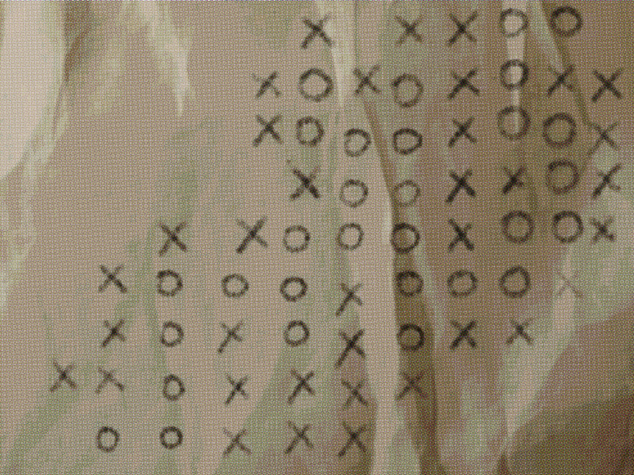

本报讯（记者 萌萌） 省地矿局第三勘探队今日公开了昼湖湖底声呐勘测成果，一张详细标注了水下地形的手绘图纸首次向公众展示。领队工程师潮启明介绍，该图基于多波束声呐数据绘制，揭示了湖底极为复杂的沟壑与回环结构，其形态远超此前对喀斯特地貌的认知。
勘测显示，昼湖底部并非平坦沉积层，而是由一系列狭窄通道和宽阔空腔构成，部分区域呈现螺旋状走向，整体宛如一座天然迷宫。潮启明表示，声呐回波在多个区域出现异常折射，表明可能存在尚未探明的深层洞穴系统。目前已知的最大深度达67米，远超溶洞常规蓄水深度。

潮启明透露，手绘图上标注的⭕与❌并非随意为之，而是基于上千次声呐回波比对和风险测算。“我们建议任何后续考察必须严格遵守图上标注的通行顺序，贸然闯入标记为‘❌’的区域可能引发塌方或暗流。” 目前该图已提交镇政府存档，并作为地质遗迹保护的重要依据。
关于图中标注的“安全路线”顺序与早前洞穴岔路走法是否存在关联，潮启明未予置评，仅表示“自然界的巧合往往超出人类想象”。